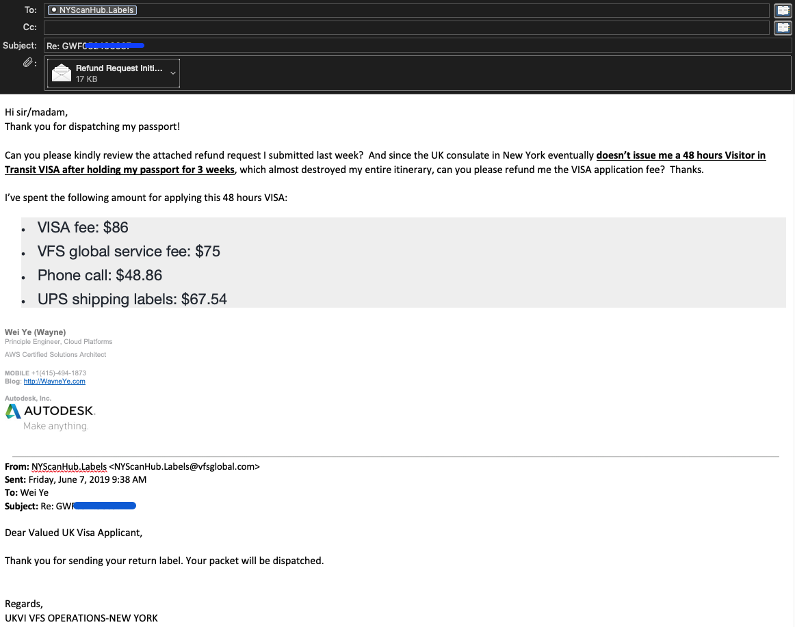

Apply UK Visit VISA
Background
I was planning to attend #adskfootball2019 in Dublin, Ireland from Jun 14th to Jun 16th, 2019:

In order to attend, I needed applying Ireland VISA, and since I was planning to fly back to Shanghai later in June, so I thought I could just fly from SF to Dublin, then Dublin to Shanghai, and soon I realized that there is no direct flight from DUB to PVG, so a practical (and also very fun and economic) option is to fly from Dublin to London, and then London to Shanghai, bingo ^_^
The VISA application experience
The most appropriate VISA for me would be Visitor in Transit VISA, which means I must have in/out flights and must leave UK within 48 hours, sounds good, I can stay in London two days, two nights, and since it was just 1 month away, I thought applying this kind of VISA would be relatively faster and easier.
So the first step is to make an appointment at USCIS and process 10 finger printings, short say: 10-printed, it was not that bad since the most close USCIS office is just 15 minutes of walking from Autodesk 1 Market office. After doing this I got a receipt and instructions which guides me the next step: mail all the required documents to UK Consulate in New Your: a letter to explain the purpose of the visit, financial proof and all my family members’ profile, and most important: I must mail them my passport, inside this instruction it clearly instruct appliers to buy a shipping label from a VFS global: https://www.vfsglobal.co.uk/us/en/premium-services:

Well, I won’t spend even 410 bucks to buy their “Premium Service”, there is a section in the bottom of the page “Most popular services”, and I chose “Round Trip Courier Service - up to 2lbs” which is 72 bucks (later on after I read some posts in Quora I realized this is not required, I can simply just purchase a return label from UPS).
So since I have to mail my passport and I would also apply Ireland VISA, and I visited the Ireland consulate and talked to a really nice lady officer there, explained my situation and she told me it is ok, they will process my VISA application without holding my passport, I can go ahead mail my passport to UK consulate, I appreciated her considerate.
I mailed my passport on May 23rd, i.e. 20 days before the tournament, I truly hoped my application can be processed fast enough. However, the fact was there was no progress after two weeks, on Jun 5th I couldn’t wait any longer, and I realized there isn’t an online portal to track the VISA status nor a phone number to call, I called the UK consulate in San Francisco and the stuff was really rude and kept emphasizing they are not responsible for any VISA service, and I was redirected to a robot audio saying I can visit their website for contacting method.
After some googling and struggling I found their contact methods at: https://www.gov.uk/contact-ukvi-inside-outside-uk/y/outside-the-uk/english
Contact UK Visas and Immigration in English You can call or email English-speaking staff with a question about your application. Contact centre staff cannot give you advice about your personal circumstances.
By phone Telephone: 00 44 203 481 1736 Monday to Friday, 24 hours Calls cost £1.37 per minute on top of your standard network charges.
By email Email UK Visas and Immigration. Emails enquiries cost £5.48. You will not be charged for any follow-up emails about the same enquiry.
You’ll get a reply to your email within 2 days, except on Saturdays, Sundays and UK public holidays.
I called this number and the very first voice I heard was to enter my credit card information, and after 2 minutes of wait a human picked up the phone and stating immediately without even letting me to say hello: “before you talk please allow us to emphasize the disclaimer blah, blah…”, this last about 40 seconds, and I finally got chance to speak, after explaining my situation I begged: “please mail back me my passport immediately, I don’t need VISA any more, thank you!!”. I don’t want to recap these horrible moments, I ended up by calling them twice and got charged $1.75 * 2 + $15.68 + $29.68 = $48.86 for a single purpose as I roared above^.
Conclusion
First, don’t get me wrong, I fully respect UK, a great country that contributed a ton to humane being, I have several friends from UK as well. However, IMHO, visitor who plan travel to a certain place because they are expecting a pleasant journey, they hope a wonderful trip so that it can be shared to their friends and relatives, also to create some unforgettable memory, whereas after experiencing this unpleasant, not friendly, or let me say it directly: arrogant VISA processing process: 10-printed + super detailed forms + non-traceable progress + insanely expensive inquiry phone charge VISA experience, this could kill all of their positive passion. For my case please remember: after all I was just applying a Visitor in Transit VISA which only allowing me to stay in this country for less than 48 hours, but it almost destroyed my entire travel plan because of their “impressive efficiency”😠
The total cost on me so far are:
- VISA fee: $86
- VFS global service fee: $75
- Phone call: $48.86
- UPS shipping labels: $67.54
- Approximate 20+ raw hours input on this VISA application


Updates
- Jun 8th: until the time I wrote this post (Saturday Jun 8th), my passport is still on the way back to San Francisco.
- Jun 10th: received an email UKHubVISAInfo: “Your UK visa application has been dispatched from the UK Visa Section. –Croydon”
- Jun 11th: I finally received my passport at 11:45 AM, so the UK consulate in NYC didn’t issue me a VISA eventually, sure, fine! Maybe they were just too busy with Brexit and really didn’t have time to process my 48 hours VISA during the past 3 weeks, I understand but I wrote a reply email to them below:
 - Jun 11th: I ran to the Ireland consulate immeditely and got to see Ms. Molly the 3rd time, as always, she is so kind, helpful and considerate, she pasted my approved short-stay travelling VISA within 1 minute and expressed her wishes to my upcoming trip in Ireland, I appreciated and told her I decided to stay in Ireland for two more days, I also asked her whether or not let me bring anything she needs from Ireland, she said no with smile and appreciation. I will update on this later :)

Leave a comment